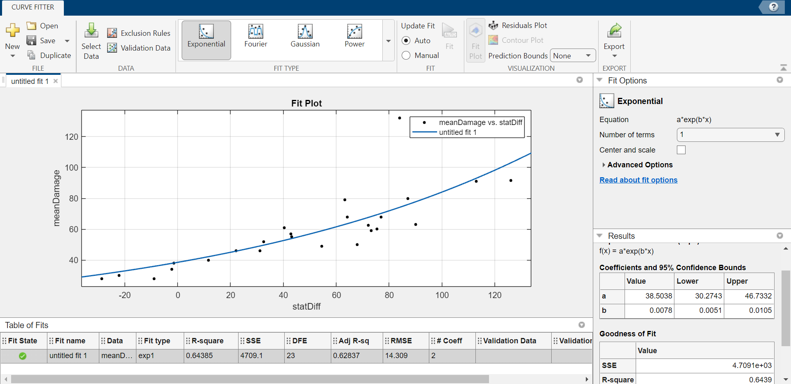

Welcome to my Portfolio!
I hold a Bachelor's degree in Computer Science from the University of Michigan. I enjoy programming, data analytics, and application development.
Below is my resume. Click on the other tabs to learn more about some of my projects that I want to highlight.
University of Michigan ROTC Digital Wargame
- Link to Wargame (not always running)
- About the Wargame
I collaborated primarily with Leo Intelisano and Jacob Tkaczyk on this project.
I worked on this project for an internship from June 2025 to January 2026. The main goal was to create a digital wargame to teach Rerserve Officers' Training Corps (ROTC) cadets about military strategy. The game is multiplayer and is designed to be played with over 100 concurrent users. An initial physical version was tested in the winter of 2025, but the effort to digitalize it was motivated by the difficulty to organize so many players and keep track of game state.
Two teams worked on this wargame. The first was the mechanics team, consisting of around 15 cadets, and overseen by Air Force major Buckner, Army captain Goldstein, and Navy lieutenant Nord. Their main responsibility was to design the rules, mechanics, and gameplay. The other team was the digitalization team, which I was a part of. It originally consisted of around 10 programmers, but most of them dropped the project by the time classes resumed in August, leaving just Jacob, Leo, and I to code the game.
The website follows a modern microservices-inspired architecture with clear separation between frontend, backend, and infrastructure services. Next.js is used for the frotned, Django is used for the backend, Redis is used for the WebSocket server, and Neon (PostgreSQL) is used for the database. For hosting, we use an Nginx Reverse Proxy & Load Balancer and a Cloudflare tunnel.
We coded the website completely from scratch. Initially, my main role was to design and maintain the database, which I did, but I also assumed the responsibilities of coding the backend and WebSocket logic after the members originally assigned to those dropped out. I also contributed to the frontend, primarily where the frontend interacts with the backend. More specifically, I:
- Designed the database schema, created the database, and populated the database
- Created the backend API endpoints
- Rewrote the WebSocket server, reducing the number of WebSocket connections per client to only 1 using multiplexing
- Implemented the login system, including authentication using cookies that works over HTTPS
- Wrote the frontend code that initially requests data from the backend, and establishes the initial WebSocket connection
- Also created some frontend components, such as the chatting feature
Despite so few coders working on this project, we achieved an excellent end result, culminating in a large-scale playthrough on January 25th that saw over 100 cadets play the game on our website. Though the first milestone is complete, the project will see more development to improve it for future game sessions.
Technologies used
- Cloudflare
- Nginx
- Next.js
- Django
- Daphne ASGI server
- Redis
- SQLite and Neon PostgreSQL databases
- Docker
Final Fumes (Video Game)
I collaborated with Isaiah Richards, Jagger Pacheco, and Thomas Dixon on this project.
This project was the primary deliverable for EECS 494, Introduction To Video Game Development, an intense Major Design Experience (MDE) course at the University of Michigan. We were tasked with creating a full-fledged video game as a team in about 8 weeks. From the start, our team was very ambitious. Here are a few things that set us apart from others:
- We had only 4 members; most teams had 5
- We did not base our game off of any of our previous projects
- The game is 3D, and we made almost all of the assets ourselves
- Levels are procedurally generated
Our horror-themed game had players navigating a vehicle to a gas station while being chased by monsters in 3 procedurally-generated stages, each more difficult than the last. Players discovered monsters' abilities on the fly, and had to use quick thinking to formulate and execute strategies for avoiding the monsters, all while using spatial audio to keep their bearings straight.
This project required an extreme amount of work. It also required lots of communication; our team called each other multiple times a week for hours on end to discuss the direction of our development, bounce ideas off each other, and to divide up our work.
One of my primary responsibilities was creating 3D assets for the game. Nobody on our team knew how to use Blender or any other software for creating 3D models, so we instead created models using voxels, which are like 3D pixels. I created two of the monsters, the gas pump, cones, barriers, journals, and more. I also wrote some scripts to help create models, such as curved roads (scripts available in this GitHub repository). Besides creating 3D models, I also contributed to coding the game, such as the monsters' behavior and difficulty tuning.
This project stands out for its technical complexity. Our team had to research graph theory to create a novel algorithm for randomly generating the terrain as the player moved in a way that the roads were still logically and connected. We also had to heavily optimize the number of faces our 3D models had and how we were spawning in road tiles just so users wouldn't experience extreme lag. We also had to think a lot about how to guide players well without requiring them to read too much text (players do NOT like reading), how to make the general atmosphere of the game immersive, and how to make the game fun.
During the game showcase, we received a lot of feedback that the game was difficult to beat, but in general the response was overwhelmingly positive. Best of all, players were genuinely frightened when they got jumpscared by the monsters. Our game received the fourth-most votes out of about 20 games in the popularity contest.
Technologies used
- Unity Game Engine
- C# Programming Language
- Unity Version Control (Formerly Plastic SCM)
- MagicaVoxel Software
- Jira for Project Management
- Python Programming Language (scripts to create in-game assets and audio)
- Audacity Software
- ElevenLabs AI Voice Software
Credits
- Radio music by SoulProdMusic
- Quick Outline Effect by Chris Nolet
- Voxel Optimization Tool by Davidevofficial
- Car Crash Sound 1 by softwalls
- Car Crash Sound 2 by JD_Falotico
- Car Idle Sound by Ibirdfilm
- Stalker (dark humanoid enemy) base model by vsify
- Stalker (dark humanoid enemy) screech sound by Artninja
- Lurker (spider enemy) base model (link no longer works)
- Lurker (spider enemy) hiss sound by Garuda1982
- Player vehicle base model
- Main menu text tools by TextStudio
- Main menu text material textures by Textures4Photoshop
- Hint font by Pixel Sagas
- Radio font by Style-7
- Credit to Joseph Brown for main menu music (used with permission).
- Credit to ChatGPT for general assistance in bug fixes and code discussion.
- Credit to ElevenLabs AI for voice acting.
Michigan Ross Business+Tech Datathon (2024)

I collaborated with Atul Gera, Julia Spilkin, Makayla Beardsley, NaveenJohn Premkumar, and Nolan Birkeland on this project.
The Business+Tech Datathon is an annual competition hosted by the Ross School of Business. Participants are given a large dataset, and then are tasked with analyzing the given data, identifying relevant business questions, and creating a presentation of our findings. For our year, we were provided greenhouse gas emission data by industry in different sectors.
My friend Naveen invited me to participate in the competition with him, and I agreed. Teams varied in size from 2 to 6 members, and we combined with Julia, Nolan, Atul, and Makayla's group to form a group of 6. In total, there were over 40 teams.
From the start, it was clear that greenhouse gas emissions were high, and that we should figure out an economically viable way to help reduce those emissions. Ultimately, we proposed for Starbucks to serve their beverages in alternative cups, made primarily with hemp, that emit fewer greenhouse gases during manufacturing. My main responsibility was performing extensive analysis to estimate how much money it would cost to implement this idea, and to estimate how much greenhouse gas emissions would be reduced as a result.
Though our analysis was well-researched and thorough, what really set our team apart from the others was our communication skills. Our team created a beautiful, well-organized slide deck framing our idea as a business pitch that highlighted the benefits it would provide, and we presented it confidently. The panel of judges, consisting of university faculty and consultants at PwC and Deloitte, loved it. We earned first place first and the $3,000 grand prize. Notably, there were no graduate students on our team, and we were the first team ever to win the competition without a business major on the team.
Discord Bot Battle Move Suggester
I worked on this project alone.
I like to code in my free time, and this move suggester is on example of my personal projects. This program analyzes a game (henceforth referred to as "the gacha" in reference to how characters are obtained) played through a bot on discord.com to help the user make optimal decisions, much like how a chess engine calculates the best moves in chess. Note that this project utilizes selfbotting, which is against Discord's terms of service. Although I don't believe that the way I used selfbotting here was harmful or malicious, I've elected to hide my Discord username. Also note that the bot that hosted the gacha is now out of commission.
The gacha had about 70 characters, each with different stats (resolve, mental, physical, social, initiative), moves (such as fighting, scheming, and unity), personalities, tags, etc. A player's team consists of 3 active characters and 3 bench characters (henceforth referred to as the player's "party"), and all of the aforementioned variables contribute to how well a team synergizes, and how much damage a particular move does. The stats of the character a move is used against also affects damage. Because all of these variables affect damage output, the first step to be able to predict damage was to collect data. The gacha bot's API was ill-suited for this task, but I made do by writing my own scripts, such as this, and then stored the collected data in a MongoDB database.
The next step was keeping track of game state. This required setting up:
- A locally hosted server that my browser could request the previously collected data from
- A WebSocket connection to Discord so I could receive updates about Discord messages in real time
- A WebSocket connection to my locally hosted server so it could be updated in real time
Etc. I wanted my program to be able to keep track of multiple ongoing battles at the same time, so it's equipped to do that. Also, characters have different levels, and the only way to determine what level a player's characters were was by requesting an image of the player's party and then parsing that image for the information, so I wrote code to do that. Once the characters being used were identified, their stats could be calculated.
The program also needed to keep track of the state of characters in ongoing battles. Used moves would obviously affect the characters' resolve (which is akin to their health), but they could also affect them in other ways too- many moves buffed allies' stats, debuffed opponents' stats, applied statuses, etc. Therefore, it was necessary to be able to parse what moves players used in order to keep track of game state. This was probably the most difficult part of writing the program, and it got especially complicated when both players used the same character.
Although it was clear that all of the aforementioned variables affected damage output, the exact formula specifying how much each variable contributed to overall damage was not public, so it had to be inferred. This was made harder due to some randomness being present in the damage calculation. Nevertheless, I wrote scripts to collect data about how stats related to damage output. After collecting a few thousand data points, I used MATLAB to perform linear regression on the collected data in order to settle on a formula that predicted damage output well.
Another challenge arose when a new mechanic called runes was added to the gacha. These runes affected damage output, but unlike the other variables, one couldn't see what runes their opponent was using. As such, I updated the program to guess/detect that certain runes were being used based on certain indicators or if observed damage differed significantly from what was expected.
Finally, once the program could accurately determine characters' stats, keep track of characters' states, and predict move damage, I created a clean interface to communicate all of the information to me, the user of the move suggester. I also made the interface interactive so that I could view damage predictions if I suspected the opponent was using certain runes or if characters were switched.
This was a comprehensive, difficult project, and one with little practical use by itself, but it motivated me to teach myself web development. I applied a lot of what I learned when programming during my ROTC Wargame internship.
Multi-threaded Network File Server
I collaborated with Bennett Liyanto and NaveenJohn Premkumar on this project.
This project was the final project for EECS 494, Introduction To Operating Systems, an intense Upper-Level Computer Science (ULCS) course at the University of Michigan. Because it was an assignment, I cannot share the source code. We were tasked with creating a multi-threaded network file server in C++ using the Boost library. In short, the file server hosts files that users (called clients) can send messages to over a network using a WebSocket (TCP protocol). These messages can direct the server to read, write, create, or delete files. Crucially, there can be no race conditions. Using reader and writer locks let us achieve more fine-grained control than normal mutexes, allowing for concurrent reads while prohibiting concurrent writes. Furthermore, the file system must stay consistent if, at any time, the system crashes.
This project was a challenging and fitting conclusion to a challenging course. It incorporated many elements that operating systems manage, including sockets, filesystems, crash consistency, and implementing abstractions to provide a simple interface hiding a more complicated reality.
MDST Reddit Data Mining and Sentiment Analysis

I collaborated with Andy Liang, Sergey Kislenkov, Toby Buckfire, and Vatsal Shah on this project.
This project was primary deliverable for the Mining & Analyzing Reddit team in the Michigan Data Science Team (MDST) club. We were tasked with creating a program that could scrape (i.e automatically exfiltrate data from) reddit.com, a social news aggregation and forum social media platform. Our team then chose to tune a machine learning model to analyze the sentiment of the scraped posts until it was reasonably accurate. Finally, we explored whether post sentiment had any correlation with post upvote ratio (we found that it's very weak) and then created graphs to present our findings at the MDST project expo.
Initially, there were around 25 students on the Mining & Analyzing Reddit team, but by the end of the semester only my collaborators and I remained; our team had good chemistry and resolved to see the project through. The project proved to be an excellent opportunity to apply our knowledge of web technologies and machine learning to create something practical.
My Notes
Prior to entering college, I had little programming experience and no formal education in programming. I decided to major in computer science after discovering that I liked it when taking a programming class required for all engineering students. That meant that all the information was new, and I had less time to learn and remember it than most of my peers who had taken AP CS in high school. I found that taking notes was a good way to organize and retain what I learned. Here are some notes I've written, as well as why I wrote them. I include them here to demonstrate my proficiency with the topics they cover and because they could be useful to others.
Authentication using cookies
I wrote these while developing the login/authentication system for the ROTC Wargame.
Bash
Initially, I was very confused about what WSL was, why programmers use Linux, etc. My classes told me what commands to run in the terminal, but I wanted to understand what those commands were doing. EECS 201 greatly helped me understand Linux and Bash better. I also read the Linux Command Line and Shell Scripting Bible. I wrote these notes to help me memorize the commands and so I that could quickly reference them.
C Debugging
The content is from EECS 201 and EECS 482. Writing these notes helped me use GDB to debug multi-threaded programs in EECS 482.
EECS 281
EECS 281 was a difficult class for me, especially the exams. I wasn't satisfied with the grade I got in the class and felt that I had not learned the content thoroughly enough, so after finishing the class I wrote these 100+ pages of notes for myself.
Git
Git was another tool like Bash that was mentioned in class but I felt very confused about. Once again I gained a better understanding of Git (and GitHub) in EECS 201, and I wrote these notes so that I could quickly reference Git commands. It also helped me keep straight in my head how to use branches, remote repositories, and multiple accounts.
Google Cybersecurity Certificate
A job I wanted to apply to listed having a cybersecurity certificate as a requirement, so I completed the Google Cybersecurity Certificate Course during Coursera's 1-week free trial so that I didn't have to pay money. I was concerned I would forget everything I learned because I rushed through the course so quickly, so I created these notes. Luckily, I already knew a lot of the information that the course taught, particularly the technical aspects, due to EECS 388 and other classes. These notes only cover things I didn't know prior to taking the course.
LeetCode
I generally enjoy programming, but LeetCode is the exception. Nevertheless, because many jobs ask LeetCode questions in interviews, I've done many problems.
SQL
I learned SQL from IOE 373, and it's been useful for many other things as well.
VBA
Another language I learned from IOE 373. Since I don't use VBA often, I was concerned I would forget it, so I wrote these notes.
Vim
I learned about Vim in EECS 201, but only got a legitimate reason to use it after my laptop's battery started going bad. The battery was under my trackpad and inflated, making the trackpad unusable. I found it annoying to switch between typing and a disconnected mouse, so I learned Vim.